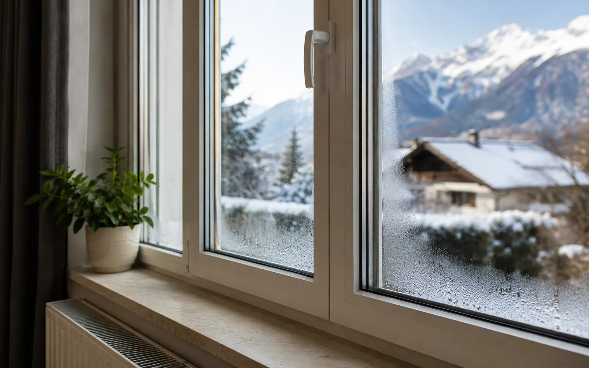

Courants d'air, condensation, paroi froide, bruit : les signes à observer avant de remplacer.
Courants d'air, paroi froide, condensation ou bruit n'ont pas toujours la même cause.
Une menuiserie plus étanche peut révéler un problème d'air intérieur.
Le bon choix doit limiter les pertes de chaleur sans dégrader le confort d'été.
Joints, tapées, coffres de volets et seuils expliquent souvent la différence de résultat.
Une fenêtre peut faire perdre du confort sans être cassée. Avant de remplacer, il faut identifier la cause : vitrage ancien, joints fatigués, dormant déformé, pose faible, coffre de volet, pont thermique ou ventilation insuffisante.
Réponse directe
Si vous ressentez du froid près d’une fenêtre, le problème peut venir de la fenêtre elle-même, mais pas toujours. Une paroi froide, un courant d’air, de la buée ou une pièce difficile à chauffer ne racontent pas exactement la même chose.
| Ce que vous constatez | Cause possible | Ce qu’il faut vérifier |
|---|---|---|
| Courant d’air au dormant | Joint usé, réglage, défaut de pose | Joints, fermeture, habillages, étanchéité périphérique |
| Vitrage très froid | Vitrage ancien ou peu performant | Type de vitrage, Uw, état général de la menuiserie |
| Buée sur la vitre intérieure | Humidité ou ventilation insuffisante | Aération, VMC, entrées d’air, usage de la pièce |
| Buée entre deux vitres | Vitrage isolant défaillant | Remplacement du vitrage ou de la menuiserie |
| Bruit extérieur très présent | Faiblesse acoustique | Vitrage, joints, coffre de volet, entrées d’air |
Les tests simples à faire chez soi
Passez la main autour du dormant quand il fait froid ou quand il y a du vent. Si l’air passe nettement sur un point précis, le sujet peut être un joint, un réglage ou une reprise d’étanchéité.
Regardez ensuite la condensation. Une buée ponctuelle sur la vitre intérieure peut venir d’un excès d’humidité ou d’une ventilation insuffisante. Une buée enfermée entre deux vitres indique plutôt que le vitrage isolant a perdu son étanchéité.
Réparer, régler ou remplacer ?
Tout ne justifie pas un remplacement complet. Une fenêtre récente qui ferme mal peut parfois être réglée. Un joint usé peut se remplacer. Une quincaillerie fatiguée peut être reprise.
Le remplacement devient plus logique quand plusieurs problèmes se cumulent : ancien vitrage, profil abîmé, dormant déformé, froid persistant, bruit important, condensation régulière ou mauvaise pose d’origine.
| Situation | Action à envisager |
|---|---|
| Fenêtre récente qui ferme mal | Réglage et contrôle de la quincaillerie |
| Joint abîmé mais menuiserie saine | Remplacement ou reprise du joint |
| Vitrage embué entre les deux verres | Remplacement du vitrage ou de la menuiserie |
| Ancienne fenêtre avec froid, bruit et défauts visibles | Devis de remplacement complet |
| Froid sur tout le mur autour | Vérifier aussi l’isolation du mur et la ventilation |
Les erreurs à éviter
- Changer la fenêtre sans comprendre la causesi le problème vient de la ventilation ou du mur, le confort restera imparfait.
- Oublier le coffre de voletil peut laisser passer froid ou bruit même avec une bonne fenêtre.
- Comparer seulement le vitragele dormant, la pose et les habillages comptent aussi.
- Négliger l’air intérieurdes fenêtres plus étanches peuvent aggraver la condensation si la ventilation est insuffisante.
Le bon devis doit répondre au diagnostic
Un devis utile doit expliquer ce qui sera corrigé : vitrage, dormant, pose, étanchéité, coffre, ventilation, habillage ou reprises autour de l’ouverture. S’il ne fait que proposer “une fenêtre neuve” sans préciser la cause du problème, il manque une partie de la réponse.
À retenir : la bonne question n’est pas seulement “mes fenêtres sont-elles anciennes ?”. La vraie question est “quelle cause explique mon inconfort, et quelle solution la corrige vraiment ?”.
- France Rénov’ - remplacer les portes et fenêtrescette ressource explique les enjeux de remplacement, de pose et de ventilation.
- ADEME - choisir un système de ventilationl’ADEME rappelle qu’un logement rénové doit rester ventilé pour limiter humidité et inconfort.
- ADEME - assainir l’air intérieurcette page explique le lien entre humidité, qualité de l’air et condensation.
- Service-Public.fr - remplacement de fenêtres, volets ou portescette fiche aide à vérifier les démarches si le remplacement change l’aspect extérieur.